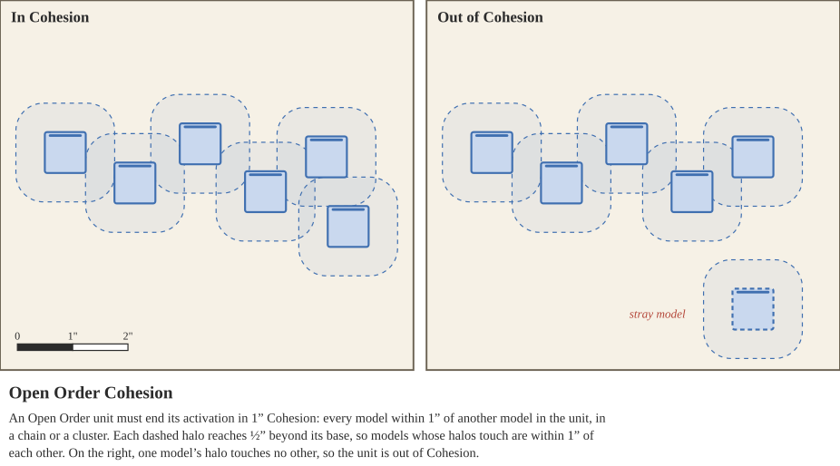
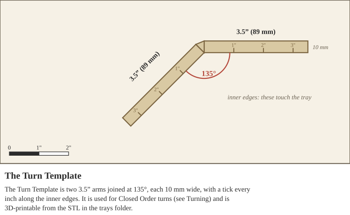
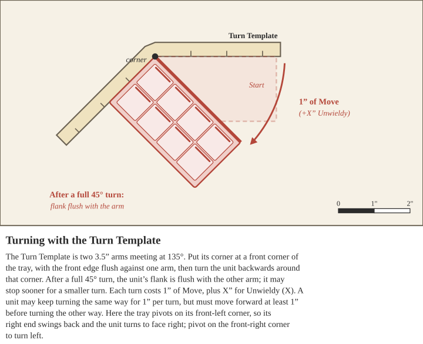
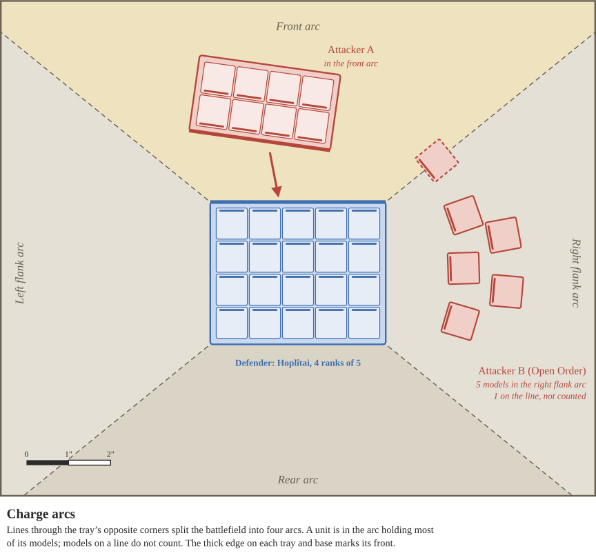
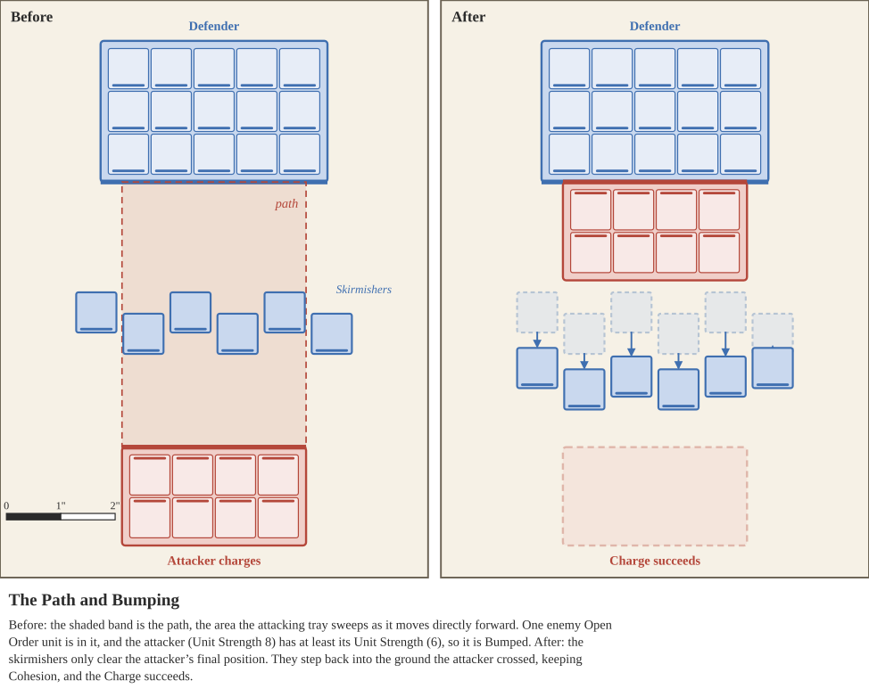
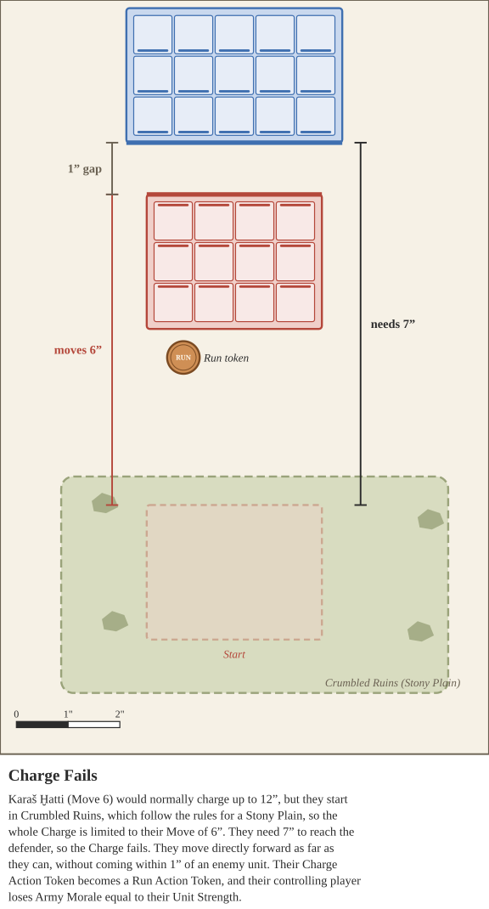
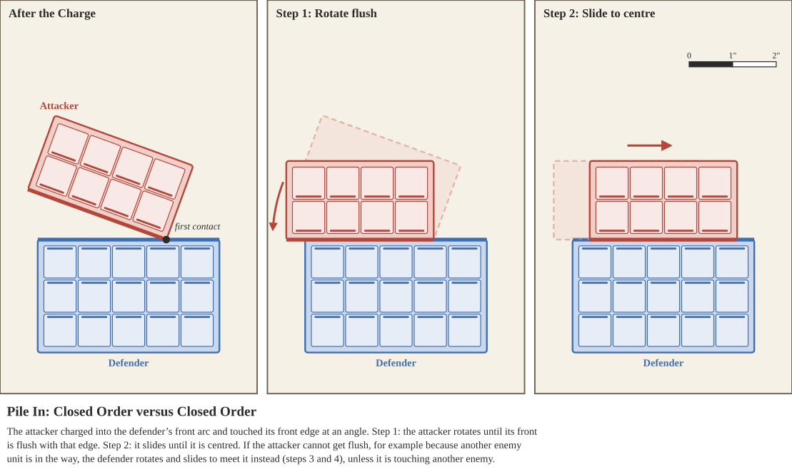
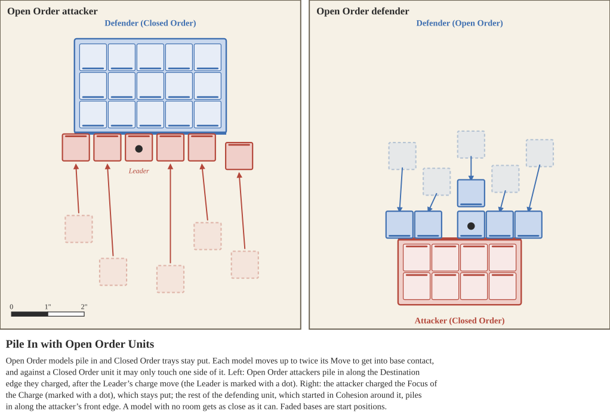

Every unit profile in the game has a Movement Value - a number in inches that dictates the normal distance the unit can travel in combat. Move values, and distances worked out from them, are never rounded: half of a Move of 5 is 2.5”. Only the distance spent on each part of a divided move is rounded up to the nearest inch (see Activation).
When a unit is activated, during the Movement step it takes one action. Normally the controlling player chooses one of four actions: Standard Move, Run, Charge, or Hold. A unit with a Flee Action Token does not choose: it must take the Flee action instead. Every action except Standard Move gives the unit the Action Token of the same name (see Action Tokens). The token reminds both players what the unit did, because it changes how the unit attacks and defends. The table below summarizes the five actions.
| Action | What it does |
|---|---|
| Standard Move | Move up to the unit’s Move value, turning as needed, without ending within 1” of an enemy unit. The unit may shoot afterwards. No Action Token. |
| Run | Move up to twice the Move value. Gains a Run Action Token: -1 Strength, and the unit cannot shoot. |
| Charge | Move up to twice the Move value into contact with an enemy unit. Gains a Charge Action Token: +1 Strength, and the unit cannot shoot. |
| Hold | Stay in place to meet the enemy. Gains a Hold Action Token until the unit’s next activation: +1 Accuracy, and +1 to Break and Fear Tests. |
| Flee (forced) | Only for a unit with a Flee Action Token. It first tries to Rally itself; if it does not, it Flees. |
There are 3 major rules that apply to all forms of Movement:
1. No unit may overlap another unit
2. No unit may move through another unit, without a special ability
3. No unit may willingly move off the board, and if they are forced to they are removed from play
A Standard move is when a unit is most flexible - it can move, turn, and later shoot. During a Standard Move no part of the unit may end its move within 1” of an enemy unit.
A Standard Move action provides the unit its Move Value in Move Allowance. In other terms, the unit is allowed to move a number of inches this activation equal to its Move Value.
For a closed order unit on a tray, begin measuring the move from the front of the tray, and end measuring from the front of the tray. Make sure to not move the unit forward extra distance by changing the measure reference point.
A Closed Order unit always moves directly forward, in the direction its front faces, and changes direction only by turning. It may not move sideways or backwards unless a rule allows it, such as the Musician, a Bump, or a Push, Withdraw or Pull.
For an open order unit, with loose models rather than on a tray, the models move individually but must end the activation with 1” Cohesion. This means that any given open order model must be within 1” of another open order model - either in the form of a chain or a cluster. When open order units move, you may first rotate them freely so that their front is in the direction of travel, and use that edge as a measuring reference.
A unit can still end up out of Cohesion through other effects, such as losing models. An Open Order unit that is not in Cohesion at the beginning of the Morale Phase gains a Flee Token (see Open Order Units), so move stray models back into Cohesion with the rest of their unit on its next activation.

During a unit’s Standard Move it may also turn. Units may turn and move in any order as they use their Move Value, and the rules for turning differ between Closed and Open Order units. A unit may stop partway through its move to turn, but each part of the move is rounded up to the nearest inch (see Activation). For example, a unit that moves 0.8” and then turns has spent 1”.
Closed Order units turn their entire tray at once. Turning the unit is done in 45° increments using the Turn Template. Place the Turn Template in one of the front corners of the Tray, aligning one side of the tool with the front side of the tray. Then, rotate the unit backwards around that corner, guided by the template. The Turn Template’s two arms meet at 135°, so after a full 45° turn the unit’s flank is flush with the other arm. A unit does not need to turn the full 45°.

Each turn costs the unit 1” of its Move Allowance for this activation. Closed Order units may turn multiple times in a row as long as they are in the same direction i.e. turning left twice. A Closed Order unit may not turn the opposite direction until it has moved forward at least 1”. For example, a unit may turn left, move forward 1”, and then turn right.
Turning counts as moving for Closed Order Units.
About Face: instead of turning, a Closed Order unit may turn to face directly behind it. The tray rotates 180° about its centre, keeping the same footprint, so its front edge becomes its rear edge. This costs half of the unit’s Move Value, rounded up, and counts as its only turn this activation. A unit cannot About Face during a Charge.
To keep the footprint exact, set the Corner Marker (a small 90° template) against one corner of the tray before lifting it, then turn the tray around and set it back down with a corner in the marker.

Open Order units turn on a per model basis: each model turns about its rough center, without any movement cost. Open Order models may stagger their moves so that they can turn between measurements, turning without restriction, but each part of a staggered move is rounded up to the nearest inch (see Activation).
Turning does not count as moving for Open Order Units. They are only allowed to turn when the controlling player would otherwise be able to move them. For example, they are not allowed to be turned when an opponent is measuring Line of Sight, but they are allowed to be turned during a Hold action, or while Piling in.
Running shares all of the same rules as a Standard Move, with some modifications. When a unit decides to Run, place a Run Action Token next to it until the End of the Round Phase. This unit receives Move Allowance equal to twice its Move Value.
While a unit has a Run Action Token it incurs several bonuses and penalties:
Charging shares all of the same rules as a Standard Move, with some modifications. When a unit Charges, it gains a Charge Action Token (see Charge Action Token) and receives Move Allowance equal to twice its Move Value. Without measuring, the attacking player then chooses an enemy unit to Charge. If the Charge succeeds, the attacking unit ignores the usual rule that units may not move within 1” of an enemy unit.
Every Charge follows the same five steps, whatever kinds of units are involved. Only two things change. What the attacker aims at depends on whether the defender is Closed or Open Order (Step 1). How the attacker moves, and what can block it, depends on whether the attacker is Closed or Open Order (Steps 2 to 4).
Against a Closed Order unit, first work out which side of it is being charged. Draw imaginary lines through the opposite corners of the defending unit’s tray to create four arcs: the front arc, the left flank arc, the right flank arc, and the rear arc. The attacking unit is in the arc it has the most models wholly within, not counting models on a line. If it is tied, the attacker chooses. The Destination is the defending unit’s tray edge on the side of that arc.

Against an Open Order unit, there are no arcs. Instead, the attacking player chooses one model in the defending unit to be the Focus of the Charge. It pays to choose one that is easy to reach. The Destination is that model’s base.
A Closed Order attacker may make one Alignment turn before measuring: a single turn left or right using the Turn Template, to line the unit up for its Charge. This turn costs Move Allowance like any other turn (1”, plus any extra cost from Unwieldy), and it is the only turn the unit may make during its Charge.
An Open Order attacker chooses one of its models to Lead the Charge. The Leader makes the Charge move on its own, and the rest of the unit follows during Pile In.
This step checks only direction and distance. Ignore any units in the way for now: they are dealt with in Step 4, where some can be Bumped aside. Terrain can shorten a Charge, though. If any part of the Charge would enter or cross a Stony Plain or Marsh, the whole Charge is limited to the unit’s Move Value instead of twice it (see Major Terrain Types). Terrain Features follow the rules on their Command cards.
A Closed Order attacker can only move directly forward. Measure from the front of its tray. If moving directly forward would not bring its tray into contact with the Destination, even with nothing in the way, or the Destination is farther away than its remaining Move Allowance, the Charge fails.
An Open Order attacker measures a straight line from its Leader’s base to the Destination. If the Destination is farther away than its Move Allowance, the Charge fails.
The path is the area the attacker would cross on its way to the Destination. For a Closed Order attacker, it is the whole area its tray sweeps over as it moves forward. For an Open Order attacker, it is the area its Leader’s base sweeps over.
If nothing is in the path, the Charge succeeds. If more than one unit is in the path, the Charge fails. If exactly one unit is in the path, whether the attacker can get past it depends on the attacker:
A Bumped unit is moved out of the way as described under Bump, which can still cause the Charge to fail. A unit with the Disciplined special rule cannot be Bumped, so it always makes the Charge fail, and neither can a unit that is Locked in Combat. If terrain the attacker cannot move through lies in the path, the Charge fails. The table below summarizes this step.
| In the path | Closed Order attacker | Open Order attacker |
|---|---|---|
| Nothing | Charge succeeds | Charge succeeds |
| Friendly Closed Order unit | Charge fails | Charge fails |
| Friendly Open Order unit | Bump it | Bump it if 2× its Unit Strength |
| Enemy Closed Order unit | Bump it if 2× its Unit Strength | Charge fails |
| Enemy Open Order unit | Bump it if at least its Unit Strength | Bump it if 2× its Unit Strength |
| More than one unit | Charge fails | Charge fails |
If the Charge succeeds, move the attacker directly forward into contact with the Destination. A Closed Order attacker moves its tray until it touches the Destination. An Open Order attacker moves its Leader until its base touches the Destination. Then continue to Charge Results. If the Charge fails, see Charge Fails.
When an interfering unit is Bumped, its controlling player moves it out of the attacker’s way. A Bump can still cause the Charge to fail.
A Bumped Closed Order unit may move no more than its Move Value. First, its controlling player chooses left or right and moves it directly sideways the minimum distance needed for the attacker to pass. If that would leave it in base contact with or overlapping the attacker’s final position, within 1” of any other enemy unit, or overlapping a friendly unit, try the other direction instead. If neither direction works, try moving it directly backwards. If none of the three directions works, the Charge fails, and the interfering unit is returned to its original position as accurately as possible.
A Bumped Open Order unit only needs to clear the space where the attacker will end its Charge, not the whole path: the attacker is treated as passing through its loose formation. Its models may end anywhere else, including in the area the attacker crossed, so stepping back toward the charging unit is often the easiest way to make room. Its controlling player moves each model no more than its Move Value, so that the models keep 1” Cohesion, are not in base contact with or overlapping the attacker’s final position, are not within 1” of any other enemy unit, and do not overlap a friendly unit. If this is not possible, the Charge fails, and the interfering unit is returned to its original position as accurately as possible.

If the attacking unit made it to its opponent, its Charge has succeeded. The sight of a screaming mass of blades bearing down will often break the enemy’s nerve. But on a cluttered battlefield, or after a risky maneuver, the attacker may not reach its target, and the Charge fails.
If the Charge fails, the attacker moves only part of the way. A Closed Order unit moves directly forward along its path as far as it can without coming within 1” of an enemy unit or overlapping a friendly unit. An Open Order unit moves each model in a straight line toward the defending unit as far as it can, without any model coming within 1” of an enemy unit, overlapping a friendly unit, or leaving 1” Cohesion.
Then replace the unit’s Charge Action Token with a Run Action Token, and its controlling player loses Army Morale equal to the attacking unit’s Unit Strength. The unit’s move ends.

If the Charge succeeds, part of the attacking unit is now in contact with the defending unit. Check for Terrify, then continue to Pile In.
A successful Charge can strike fear into the defender. Units with the Terrify X special rule give the defending unit Break tokens when they charge it successfully (see Terrify X). Large units also frighten smaller ones. Compare the attacking unit’s Unit Strength with the defending unit’s (see Unit Strength). If the attacker has at least twice the defender’s Unit Strength, the defending unit gains a Break token. If it has at least three times, the defender gains 2 Break tokens instead, and so on, with one more Break token for each further multiple.
Closed Order units charged in a flank or the rear also gain Break tokens from Exposed Flanks.
A unit that was successfully Bumped during the Charge is also affected by the attacker’s Terrify X special rule, if the attacker has it, but not by the Unit Strength comparison above. A Bump that fails, along with the Charge, causes no Break tokens.
After a successful Charge, the two units close up to bring as many fighters as possible into contact. The rule of thumb is that Open Order models move and Closed Order trays stay where they are. The one exception is when both units are Closed Order: then the trays align with each other.
When both units are Closed Order, the attacker lines up with the defender’s Destination edge, the side whose arc the Charge came from. Follow these steps in order. Each movement goes only as far as it can without touching any other enemy unit.

In every other case, the Open Order units pile in and the Closed Order units stay where they are. If the attacker is Open Order, it piles in first. Then, if the defender is Open Order, it piles in with every model that is not already in base contact.
To pile in, move the unit’s models one at a time, each up to twice its Move Value, taking account of terrain and other effects, so that as many models as possible end in base contact with the enemy unit. Models may be rotated freely, including the attacker’s Leader. Models that cannot reach contact move as close as they can. When piling in against a Closed Order unit, models may only make contact with one side of it: the Destination edge for an Open Order attacker, or the attacker’s front for an Open Order defender. Models may never move into contact with any other enemy unit.
The table below summarizes who piles in.
| Attacker | Defender | Who piles in |
|---|---|---|
| Closed Order | Closed Order | Trays align: attacker first, then defender |
| Open Order | Closed Order | Attacker’s models, onto the Destination edge |
| Closed Order | Open Order | Defender’s models, onto the attacker’s front |
| Open Order | Open Order | Attacker’s models, then the defender’s uncontacted models |

While a unit has a Charge Action Token:
A unit that holds is standing its ground - giving up its chance to move to stand their ground and strongly oppose any incoming foes. When a unit Holds, it gains a Hold Action token that persists not just until the end of the round, but until its next activation.
While a unit has a Hold Action Token it incurs several bonuses:
Fleeing is an action players will avoid but are sometimes forced to take. If a unit begins its activation with a Flee Action Token, it will attempt to Rally itself otherwise it will run from combat. See Rallying for more details.
While a unit has a Flee Action Token, it incurs several penalties: